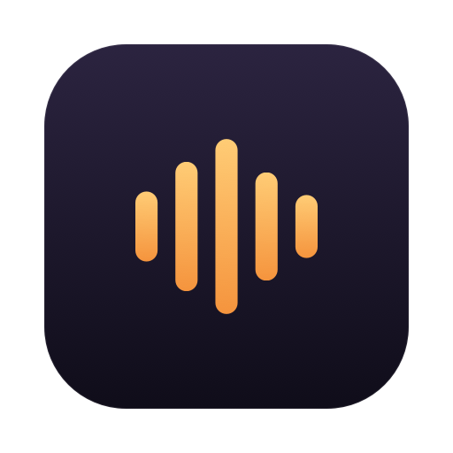

speak.
your voice stays on this mac.
Hold Fn, talk, and WhistleFlow types it into any app, offline.
16 MB. Needs macOS 26 on Apple silicon.
Hey team, the quarterly report is ready. Please review it before Friday’s meeting and send me your comments.
one key, three moments.
What you see between pressing Fn and the text arriving.
Your cursor waits in the draft. The pill shows your voice level while Fn is down.
Let go and the model transcribes on your Mac. The pill turns to a spinner.
The sentence lands at the cursor, and your clipboard is put back.
lighter and quicker than whisper.
A lightweight AI model, measured against OpenAI Whisper base.
- 11.1msto the first wordWhisper base: 73.2 ms
- 1,319tokens/sdecoded per secondWhisper base: 266
- 16.9MBon diskWhisper base: 145.3 MB
Published benchmark of the model inside WhistleFlow: 10 s of audio on an Apple M4 Pro, each engine at its defaults.
your voice takes one hop.
cloud dictation
whistleflow
everything ships inside the app.
| the model | 16.9 MB, built into the app |
|---|---|
| runs on | your Mac’s CPU, no GPU needed |
| languages | English, German, French, Spanish, Italian, Dutch, Polish |
| price | Free for the first 100 users |
| needs | macOS 26, Apple silicon |

hold fn in any app.
First launch walks you through the microphone, Accessibility and the Fn key.